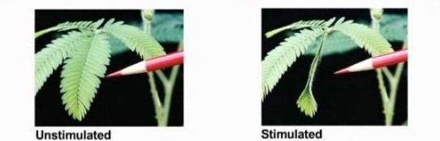
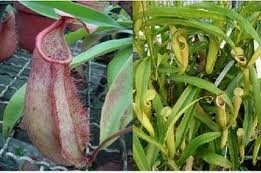
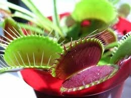

โครงสร้างและหน้าที่ของพืชมีดอก
เนื้อเยื่อพืช
1. การเคลื่อนไหวเนื่องจากการเจริญเติบโต (growth movement)
- การตอบสนองต่อสิ่งเร้าภายนอก (paratonic movement หรือ stimulus movement)
- การตอบสนองที่เกิดจากสิ่งเร้าภายใน (autonomic movement)
2. การเคลื่อนไหวเนื่องมาจากการเปลี่ยนแปลงแรงดันเต่ง (turgor movement)
3. การตอบสนองของพืชต่อสารควบคุมการเจริญเติบโต
การเคลื่อนไหวที่เกิดเนื่องจากการเปลี่ยนแปลงแรงดันเต่ง (turgor movement)
ปกติพืชจะมีการเคลื่อนไหวตอบสนองต่อการสัมผัส (สิ่งเร้าจากภายนอก) ช้ามากแต่มีพืชบางชนิดที่ตอบสนองได้เร็ว โดยการสัมผัสจะไปทำให้มีการเปลี่ยนแปลงของปริมาณน้ำภายในเซลล์ทำให้แรงดันเต่ง (turgor pressure) ของเซลล์เปลี่ยนแปลงไป ซึ่งเป็นไปอย่างรวดเร็วและไม่ถาวรซึ่งมีหลายแบบคือ
1. การหุบของใบจากการสะเทือน (contract movement)
- การหุบใบของต้นไมยราบตรงบริเวณโคนก้านใบและโคนก้านใบย่อยจะมีกลุ่มเซลล์ชนิดหนึ่ง (เซลล์พาเรงคิมา) เรียกว่า พัลไวนัส (pulvinus) ซึ่งเป็นเซลล์ที่มีขนาดใหญ่และผนังเซลล์บาง มีความไวสูงต่อสิ่งเร้าที่มากระตุ้นเช่น การสัมผัส เมื่อสิ่งเร้ามาสัมผัสหรือกระตุ้นจะมีผลทำให้แรงดันเต่งของกลุ่มเซลล์ดังกล่าวเปลี่ยนแปลงอย่างรวดเร็วคือเซลล์จะสูญเสียน้ำให้กับเซลล์ข้างเคียงทำให้ใบหุบลงทันทีหลังจากนั้นสักครู่น้ำจะซึมผ่านกลับเข้าสู่เซลล์พัลไวนัสอีกแรงดันเต่งในเซลล์เพิ่มขึ้นทำให้แรงดันเต่งและใบกางออก

- การหุบของใบพืชพวกที่มีการเปลี่ยนแปลงรูปร่างไปเพื่อจับแมลงได้แก่ ใบของต้นหม้อข้าวหม้อแกงลิง ต้นสาหร่ายข้าวเหนียว ต้นกาบหอยแครง ต้นหยาดน้ำค้าง เป็นต้น พืชพวกนี้ถือได้ว่าเป็นพืชกินแมลงจะมีการเปลี่ยนแปลงรูปร่างของใบเพื่อทำหน้าที่จับแมลง ภายในใบจะมีกลุ่มเซลล์หรือขนเล็กๆ (hair) ที่ไวต่อสิ่งเร้าอยู่ทางด้านในของใบเมื่อแมลงบินมาถูกหรือมาสัมผัสจะเกิดการสูญเสียน้ำ ใบจะเคลื่อนไหวหุบทันทีแล้วจึงปล่อยเอนไซม์ออกมาย่อยโปรตีนของแมลงให้เป็นกรดอะมิโนจากนั้นจึงดูดซึมที่ผิวด้านในนั้นเอง


2. การหุบใบตอนพลบค่ำของพืชตระกูลถั่ว (sleep movement) เป็นการตอบสนองต่อการเปลี่ยนแปลงความเข้มของแสงของพืชตระกูลถั่ว เช่น ใบก้ามปู ใบมะขาม ใบไมยราบ ใบถั่ว ใบแค ใบกระถิน ใบผักกระเฉด เป็นต้น โดยที่ใบจะหุบ ก้านใบจะห้อยและลู่ลงในตอนพลบค่ำ เนื่องจากแสงสว่างลดลง ซึ่งชาวบ้านเรียกว่า “ต้นไม้นอน” แต่พอรุ่งเช้าใบก็จะกางตามเดิม การตอบสนองเช่นนี้เกิดจากการเปลี่ยนแปลง แรงดันเต่งของกลุ่มเซลล์พัลไวนัสที่โคนก้านใบโดยกลุ่มเซลล์พัลไวนัสนี้เป็นกลุ่มเซลล์ขนาดใหญ่และผนังเซลล์บาง มีความไวสูงต่อสิ่งเร้าที่มากระตุ้น เมื่อไม่มีแสงสว่างหรือแสงสว่างลดลงมีผลทำให้เซลล์ด้านหนึ่งสูญเสียน้ำให้กับช่องว่างระหว่างเซลล์ที่อยู่เคียงข้างทำให้แรงดันเต่งลดลงใบจึงหุบลง ก้านใบจะห้อยและลู่ลง พอรุ่งเช้ามีแสงสว่างน้ำจะเคลื่อนกลับมาทำให้แรงดันเต่งเพิ่มขึ้นและเซลล์เต่งดันให้ที่ลู่นั้นกางออก
3. การเปิดปิดของปากใบ (guard cell movement) การเปิด-ปิดของปากใบขึ้นอยู่กับความเต่งของเซลล์คุม (guard cell) ในตอนกลางวันเซลล์คุมมีกระบวนการสังเคราะห์ด้วยแสงเกิดขึ้น ทำให้ภายในเซลล์คุมมีระดับน้ำตาลสูงขึ้น น้ำจากเซลล์ข้างเคียงจะซึมผ่านเข้าเซลล์คุม ทำให้เซลล์คุมมีแรงดันเต่งเพิ่มขึ้นดันให้ผนังเซลล์คุมที่แนบชิดติดกันให้เผยออกจึงทำให้ปากใบเปิด แต่เมื่อระดับน้ำตาลลดลงเนื่องจากไม่มีกระบวนการสังเคราะห์ด้วยแสงน้ำก็จะซึ่มออกจากเซลล์คุมทำให้แรงดันเต่งในเซลล์คุมลดลงเซลล์จะเหี่ยวและปากใบก็จะปิด